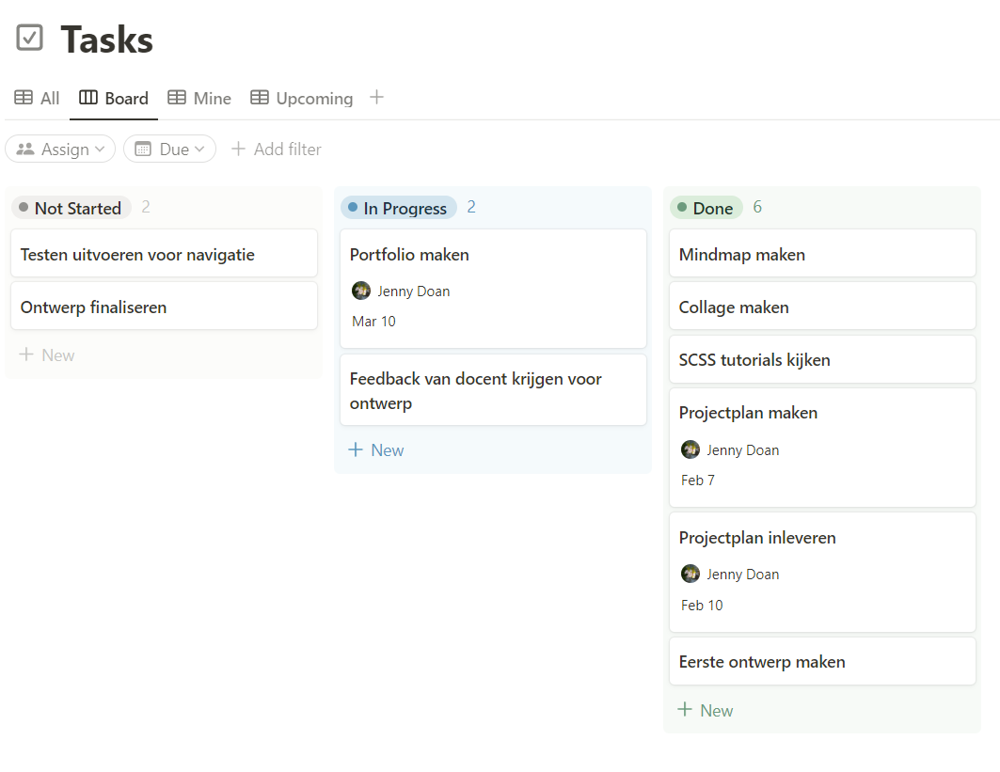

Projectplan
Portfolio - individuele project
Filter bij categorie
Projectplan

Design (UI)

Design (ontwerp)

Development

Gebruikersmening

Reflectie

Future oriented organisation
Investigative problemsolving
Voordat ik aan mijn portfolio begon, heb ik een projectplan opgesteld waarin ik mijn aanpak voor het bouwen van mijn portfolio heb beschreven. Ik heb ook de methoden vermeld die ik hiervoor zal gebruiken, en de planning waarmee ik werk om mijn portfolio op te bouwen.
Voor semester 6 moet ik mijn producten en de validatie van elk aspect tonen via een online portfolio. In plaats van een CMS zoals WordPress te gebruiken, heb ik besloten om mijn portfolio zelf te coderen om meer uitdaging en kennis op te doen. Ik werk met HTML en JavaScript, omdat ik daar de meeste kennis van heb op het gebied van web development. Voor de styling wil ik echter deze keer werken met SCSS vanwege de extra voordelen en functies in vergelijking met CSS. In het gedeelte "Development: SCSS" is meer informatie hierover te vinden.
Omdat mijn Web-development vaardigheden nog geen professionele
level had, stelde ik een hoofdvraag erop:
Hoe bouw ik een professionele, persoonlijke portfolio-website met
simpele gebruikersinteractie en navigatie, met HTML, SCSS en
Javascript?
Op de hoofdvraag heb ik deelvragen bedacht om geleidelijk de
antwoorden te vinden erop:
- Hoe structureer ik mijn inhoud in de portfolio om zo min
mogelijk navigatie te gebruiken?
- Hoe bouw ik een goed werkend portfolio-website met HTML, SCSS en
Javascript?
- Hoe ontwerp ik een professionele portfolio-website die een goede
indruk van mij geeft?
Om overzicht te behouden en mijn doelen en deelvragen voor de hoofdvraag duidelijk te beantwoorden, heb ik het proces voor het bouwen van mijn portfolio opgedeeld in verschillende fasen:
Onderzoek voor ontwerp: Ik start met brainstormen en onderzoek naar verschillende manieren om een ontwerp en gebruikersinterface (UI) te creëren. Mijn doel is om te ontdekken hoe ik mijn producten het beste kan presenteren en een effectieve eerste indruk van mezelf kan geven zonder gebruik van woorden. Ik zoek inspiratie door portfolio's van professionals te bekijken en te vergelijken, om zo ideeën op te doen voor mijn eigen ontwerp.
Ontwerp: Nadat ik de kenmerken voor mijn ontwerp heb vastgesteld, visualiseer ik mijn ideeën in prototypes. Ernaast vraag ik feedback aan verschillende mensen om waardevolle input en suggesties te krijgen op de prototypes. Dit stelt me in staat om vooraf de juiste informatie te verkrijgen en mijn ontwerp verder te verfijnen voordat ik daadwerkelijk aan de implementatie begin.
Onderzoek naar code: Aangezien ik niet eerder met SCSS heb gewerkt, heb ik daar eerst onderzoek naar gedaan om vertrouwd te raken met de syntax en functionaliteiten. Daarnaast bekijk ik de JavaScript-functies die ik wil implementeren en controleer ik of ze ook kunnen worden toegepast in mijn portfolio.
Uitvoeren en testen: Ik ben bezig met het bouwen van mijn portfolio met behulp van HTML, SCSS en JavaScript, volgens de ontworpen prototypes. Tussentijd spreek ik ook met andere mensen om suggesties en feedback te krijgen op de gebruikerservaring en inhoud van de delivarbles.
Tijdens mijn eerdere semesters was ik al bezig met planning en projectbeheer, maar het was pas tijdens mijn stage in het vijfde semester dat ik echt besefte hoeveel een goede planning kan bijdragen op de lange termijn. Voorheen zag ik het nut niet in van planningstools en maakte ik er geen gebruik van. Tijdens mijn stage kwam ik echter regelmatig in de problemen omdat ik belangrijke zaken vergat of documenten te laat indiende. Om dit te voorkomen tijdens het werken aan mijn portfolio, ben ik begonnen met het gebruik van Notion, een applicatie waarmee ik notities kan maken en mijn productiviteit kan verbeteren.
Meer gedetaileerde informatie is in de projectplan document.
üìÑ Document van projectplanVoordat ik aan deze opdracht begon, had ik geen ervaring met het bouwen van een portfolio. Ik heb hierdoor mijn problemen in mijn web-development vaardigheden in vraagstukken gezet, om ervoor de juiste oplossingen te vinden.
Ik beschrijf mijn vraagstukken over het maken van een portfolio met HTML, SCSS en Javascript, door een hoofdvraag en deelvragen te bedenken om gericht onderzoek te doen en de juiste informatie te krijgen.
User interaction (analysis and advice)
In de bedenkfase had ik al het idee om een portfolio te bouwen met zo min mogelijk navigatie. Hierdoor wilde ik niet alleen tijd besparen tijdens de ontwikkeling, maar ook zorgen dat de gebruiker niet telkens naar een andere pagina hoeft te gaan om bijvoorbeeld een product voor een leeruitkomst te bekijken.
Voor de opzet van de portfolio heeft Fontys een schema met de basis opzet van de portfolio, wat mij helpt om het ontwerp en de functionaliteiten goed af te stemmen op deze vereisten.
Ik bedacht om mijn portfolio zoals de schema te bouwen, en aparte pagina's te maken uit elke delivarable:
- Een homepagina
- Leeswijzer
- De deliverables
- Verantwoording van deliverables
In eerste instantie had ik besloten om aparte pagina's te maken voor de homepagina, leeswijzer en deliverables. Tijdens het ontwikkelingsproces heb ik echter besloten om de aparte pagina voor de deliverables te schrappen. In plaats daarvan leid ik de gebruiker direct naar de deliverable sectie op de homepagina, waar ze ook kunnen navigeren naar de specifieke deliverable. Ik heb dit gezien in het portfolio van een andere student en vond de website makkelijker te gebruiken dan als een apart pagina.
Om mijn portfolio toegankelijk en gebruiksvriendelijk te maken voor iedereen, heb ik enkele functies bedacht voor de gebruikersinterface (UI).
Bovenaan de website bevindt zich een navigatiebalk waarmee de gebruiker gemakkelijk kan navigeren tussen verschillende pagina's in de portfolio. Wanneer de muis over een element zweeft, verandert de kleur (van wit naar oranje) en grootte om het geselecteerde element aan te geven. Dit is een bekend en veelgebruikt UI-element in webontwikkeling waar veel mensen vertrouwd mee zijn.
In mobile-weergave is de navigatiebalk een hamburgermenu, waardoor de portfolio schoner uitziet.
Voor het laten zien van mijn verantwoordingen twijfelde ik aanvankelijk of het beter zou zijn om ze in een samenvatting te presenteren, of om ze op te splitsen in secties op basis van de leeruitkomsten met een filteroptie. De meeste studenten die ik ken leggen hun producten uit in een samenvatting, maar ik heb ook portfolio-voorbeelden gezien waarin alle afzonderlijke aspecten in aparte "kaarten" zijn opgedeeld.
Na overleg met mijn semestercoach heb ik besloten om de producten op te splitsen in "kaarten" op basis van de leeruitkomsten. Dit maakt het voor de docent gemakkelijker om mij te beoordelen. Om het aantal pagina's tot een minimum te beperken, heb ik besloten om de verantwoordingen weer te geven als een soort pop-up, zodat de gebruiker niet telkens terug hoeft te gaan naar de deliverable.
Omdat ik mijn verantwoordingen wilde indelen op basis van leeruitkomsten, wilde ik ook een filter-systeem implementeren om kaarten weer te geven die specifiek bij een bepaalde leeruitkomst horen. Ik heb onderzoek gedaan naar een eenvoudige methode die zo min mogelijk ruimte inneemt, en ik kwam uit op het gebruik van tags. De gebruiker kan eenvoudig op de tags klikken om te filteren en alleen de relevante kaarten weer te geven. Dit zorgt voor een handige en efficiënte manier om door de portfolio te navigeren en specifieke leeruitkomsten te verkennen.
Naast de essentiële functies zijn er ook enkele kleine functies in
de gehele portfolio die een aanzienlijk verschil maken in de
gebruikerservaring om door de inhoud te navigeren:
- Een meescrollende sluitknop om een 'kaart' te verbergen wanneer
de gebruiker klaar is met lezen. Dit werkt ook als er buiten de
pop-up wordt geklikt.
- Go-to-top knop voor de leeswijzer om snel de projecten weer te
geven als er veel naar beneden is gescrollt.
- Imagemodals om afbeeldingen vergroot te bekijken
- Gestylde knop voor documenten om te onderscheiden van tekst
- Aangepaste muiscursor om de portfolio nog aantrekkelijker te
maken, en te onderscheiden van andere portfolio's
- Toggle voor het weergeven van beschrijvingen van de producten in
de leeswijzer, zodat niet alle tekst in één pagina is en de
gebruiker kan kiezen welke zij willen lezen
- Collapsible voor de bewijs van leeruitkomsten, zodat niet alles
in één keer weergeven wordt
Vanwege mijn focus op de inhoud van de portfolio, heb ik helaas niet alle functies kunnen implementeren, zoals de imagemodals. Voor toekomstige projecten moet ik eerder om feedback vragen over de inhoud, zodat ik minder tijd hoef te besteden aan het verbeteren en herschrijven ervan (zie "Gebruikersmening").
Met behulp van het schema dat Fontys heeft verstrekt voor de basisopzet van de portfolio, heb ik een concrete basis kunnen leggen voor mijn eigen portfolio. Nadat ik de gewenste functies had vastgesteld, ging ik verder met het ontwerpen van de portfolio aan de hand van prototypes. Meer informatie hierover is te vinden in het hoofdstuk "Design (ontwerp)".
Ik dacht na over doelgroep (docenten die mij beoordelen), en dacht over hoe ik mijn portfolio zo min mogelijk navigatie kan implementeren om een simpele gebruikerservaring te leveren. Ik heb hiervan inspiratie genomen van Fontys' schema voor de basisopzet van een portfolio.
Bronnen:
10 Pros and Cons of Minimal Navigation in Web Design
User interaction (analysis and advice)
Investigative problem solving
Ik begon mijn design proces door te bedenken welke uitstraling ik wil geven geven in mijn portfolio. Ik bedachtte al om een portfolio te maken die meteen een goede indruk van mijzelf geeft aan de gebruiker, en tegelijkertijd ook persoonlijk is. Om concreet een idee te vormen, maakte ik een mindmap met alle woorden die ik leuk vindt. Ik maakte de mindmap met MindMeister, een webapplicatie om snel mindmappen te maken.
Als liefhebber van zachte en lieve esthetiek, heb ik inspiratie opgedaan door het bekijken van verschillende portfolio's van mensen in de industrie. Veel portfolio's die dicht bij mijn wensen kwamen, gebruikten een minimalistisch ontwerp met lichte kleuren, weinig tekst en veel witruimte en afbeeldingen. Sommige portfolio's gebruikten afgeronde hoeken voor de elementen zoals knoppen.
Van wat ik gevonden heb, maakte ik een collage en keek welke elementen ik kan integreren in mijn eigen ontwerp. Ik heb tevens een eenvoudig kleurenpalet samengesteld als basis voor het kleurenschema van mijn portfolio.
Na het vinden van inspiratie ben ik begonnen met het ontwerpen van een low-fidelity prototype voor mijn portfolio. Om een zachtere uitstraling te creëren, maak ik gebruik van afgeronde vlakken voor zowel klikbare als statische elementen.
Aanvankelijk wou ik Rubik gebruiken als lettertype vanwege de leesbaarheid en de subtiele afgeronde vormen in de letters. Dit gaf een gevoel van vertrouwen en professionaliteit, en paste goed bij het algemene ontwerp. Helaas bij het live-hosten via Fontys' server werd de lettertype niet weergeven, en i.p.v. vervangen door de Times New Roman lettertype. Ik zocht hierbij naar alternativen en koos uiteindelijk om Calibri te gebruiken, omdat het bijna hetzelfde kenmerken heeft als Rubik en werkt op Fontys' server.
Na afronding heb ik feedback gevraagd aan mijn familie om de opzet te valideren. Om meer focus te leggen op de opzet, heb ik enkel monochromome kleuren gebruikt aangezien dat de standaard is voor low-fidelity prototypes. De prototype heeft navigatie tussen schermen zodat ik ook feedback kan verzamelen op de gebruikerservaring. De gekregen feedback op deze prototype is te lezen in "Gebruikersmening: Mijn familie".
Nadat ik positieve feedback kreeg op de opzet op de duidelijkheid, ontwerpte ik een high-fidelity prototype met een uitgebreidere ontwerp en kleuren. Hiervan heb ik veel aspecten van andere portfolio's genomen en toegepast in de mijne.
De portfolio is minimalistisch met licht kleuren, om meer aandacht van de gebruiker te grijpen zonder teveel op het scherm te laten zien. Er is veel gebruik van afbeeldingen om producten en verantwoordingen van elkaar te onderscheiden, aangezien foto's beter herkenbaar zijn dan tekst. Voor de achtergrondkleur heb ik gekozen voor lichtgeel, omdat het niet zo sterk aandringt zoals wit, en beter complimenteerd met andere kleuren van bruin, oranje en wit en vice versa.
Klikbare elementen bestaan uit een witte vlak met schaduw, vaak met een afbeelding erbij die de meeste ruimte inneemt. Hiermee onderscheidt het zich van de licht-gele achtergrond, en geeft het een indicatie aan dat het klikbaar is. Als de gebruiker met de muis overhangt, dan wordt het vak groter en oranje gekleurd om de geselecteerde element aan te geven. De hoeken zijn afgerond om meer zachtheid met het ontwerp te creeëren.
Vergeleken met de low-fidelity prototype, is de plaatsing van de contactgegevens naar de onderste van de pagina en ontbreken van de dropdown menu de enige grote verschillen.
Van mijn broer konden de contactgegevens beter op de onderste pagina worden gezet, aangezien mensen liever meteen de producten willen zien vanwege toenemende ongeduldigheid. Ik heb hierop een klein onderzoek gedaan om deze uitspraak te valideren, en heb bronnen gevonden om het te bevestigen. Erdoor heb ik de gegevens onderaan de pagina gezet.
Voor de dropdown menu heb ik gekeken naar de portfolio's die ik had gevonden, en zag dat erin dat ze er helemaal geen gebruik van maken. Bovendien zou het ook lastig zijn om het te coderen, dus heb ik het geschrapt.
Op basis van portfolio's gemaakt door professionals en mijn eigen wensen, heb ik een minimalistisch ontwerp voor mijn portfolio gemaakt waarin mijn producten duidelijk worden weergeven. Ik heb hierbij eerst een low-fidelity prototype gemaakt om de opzet te bepalen. Vervolgens ontwerpte ik een high-fidelity prototype waarin ik mijn wensen ontwerp vastlegde door een minimalistisch, lichte ontwerp te maken waarin ik mijn producten duidelijk kan aan tonen met een persoonlijke tint erbij.
Hierna ging ik naar de volgende fase "Development", waarin ik mijn ontwerp en UI-functies werkelijk codeer in een interactieve website.
Voor meer informatie over de gekregen feedback te lezen in "Gebruikersmening".
Ik heb een professionele portfolio ontworpen om mijn resultaten op een effectieve manier weer te geven, na grondig onderzoek te hebben gedaan naar hoe andere portfolio's succesvol zijn op het gebied van ontwerp, interactie en UI/UX.
Ik formuleerde vragen over hoe ik mijn portfolio kan ontwerpen op basis van enkele aspecten, zoals tegerlijkertijd een professionele en persoonlijke aspect combineren in mijn portfolio, en welke elemeten in de portfolio moeten. Van de antwoorden die ik vond, kon ik de identiteit van mijn portfolio vormen.
Bronnen:
24 Impressive UX Portfolio Examples and a Guide for Creating Yours
Software design
User interaction (execution & validation)
Voorheen maakte ik gebruik van CMS-websites om tijd te besparen bij het bouwen van websites, maar voor deze opdracht wilde ik mijn webdevelopmentvaardigheden echt inzetten. Hoewel ik al enige voorkennis had van webdevelopment, waren er enkele functies die ik nog niet eerder had gecodeerd, maar die wel belangrijk waren om in mijn portfolio te implementeren.
In de sectie "Design UI" heb ik verschillende functies genoemd die ik graag wilde opnemen in mijn portfolio. In dit deel wil ik me echter concentreren op een paar belangrijke functies die ik heb gecodeerd. Mijn semestercoach adviseerde mij om deze functies te benadrukken, omdat ze een diepgaander inzicht geven in mijn vaardigheden op het gebied van web development en meer waarde aan mijn portfolio toevoegen.
Omdat ik eerder websites heb gebouwd voor schoolopdrachten, had ik vanaf het begin al een goed idee van hoe ik de basis van mijn portfolio wilde aanpakken. Ik begon met het maken van de benodigde pagina's die ik van tevoren had gepland. Vervolgens heb ik mijn ontwerp van het prototype zo nauwkeurig mogelijk proberen na te maken en ervoor gezorgd dat alle functies goed functioneerden.
Voordat ik begon, had ik al van tevoren bedacht welke tools ik zou gebruiken om mijn portfolio te bouwen. Net zoals de vorige keren besloot ik de portfolio te bouwen met behulp van HTML en JavaScript. Deze keer koos ik er echter voor om met SCSS te werken in plaats van CSS, ook al had ik er nog geen ervaring mee. Ik besloot voor SCSS te gaan vanwege de extra functionaliteiten die ik erover had gelezen. Ik was vooral geïnteresseerd in geneste CSS-selectors, variabelen en de mogelijkheid om herbruikbare CSS-code te schrijven.
Om de basis van SCSS te leren, heb ik eerst een YouTube-video-uitleg bekeken genaamd 'Learn Sass In 20 Minutes | Sass Crash Course'. Daarin kreeg ik duidelijke uitleg over de scripttaal, de voordelen ervan en hoe ik de belangrijkste functies kon gebruiken. Ik heb wat ik geleerd heb vervolgens in de praktijk toegepast door een testwebsite te maken, om te zien hoe ik het zelf kon toepassen.
Nadat ik een basisbegrip van SCSS had verworven, paste ik het ook toe in mijn portfolio. Aangezien SCSS grotendeels vergelijkbaar is met CSS, verliep het leerproces soepel en kon ik het succesvol integreren in de code van mijn portfolio. SCSS maakte het coderen van mijn portfolio aanzienlijk gemakkelijker, omdat ik elementen binnen een div-groep sneller kon vinden en verwijzen.
Voor het coderen van functies maakte ik gebruik van websites zoals YouTube en W3Schools. Deze websites bieden veel hulpbronnen en uitleg voor mijn specifieke problemen, waardoor ik makkelijkek verder kon werken aan mijn portfolio.
In ieder deliverable heb ik een simpel filter-systeem geïmplementeerd van enkel HTML en CSS zodat de beoordelaars makkelijer kunnen beoordelen op leeruitkomsten. Ieder 'kaart' is aan één of meerdere leeruitkomsten gekoppeld, en worden weergeven op basis van welke filter is geselecteerd.
Tijdens mijn zoektocht naar implementatiemogelijkheden kwam ik veel JavaScript-oplossingen tegen. Ik snapte er echter weinig van de code, of ze waren moeilijk toe te passen in mijn portfolio.Ik vermijd het gebruik van code van anderen als ik het niet volledig begrijp, omdat dit het debuggen bemoeilijkt."
Ik ontdekte erna een oplossing die alleen CSS gebruikt. Voor de
filter zijn er twee elementen:
- Keuzerondjes die zijn gekoppeld aan de filteropties.
- Labels die verbonden zijn met de keuzerondjes.
Wanneer er op een label wordt geklikt, wordt het bijbehorende
keuzerondje gemarkeerd als actief met behulp van de
.active-klasse. Hierdoor blijft het geselecteerd, zelfs als de
gebruiker ergens anders op de pagina klikt. Met de CSS-teken '~'
kunnen elementen aan elkaar worden gekoppeld, waardoor alleen
kaarten met dezelfde filter als de geselecteerde knop worden
weergegeven
De kaarten zijn gekoppeld aan categorieën waarop meerdere filters kunnen worden toegepast. Afhankelijk van de gekozen filter worden de kaarten weergegeven op basis van de categorieën.
//HTML
//keuzeknop
input type="radio" id="UIAA" name="categories" value="UIAA"
//label die gekoppeld is aan de keuzeknop
label for="UIAA">User interaction (analysis and advice)
//kaart met de data categorieën UIAA en UIEV
div id="designUICard" class="card" data-category="UIAA UIEV">
div class="content">
img class="previewImg" src="/images/portfolio/designontwerp.png" />
p class="titlecard">Design (UI)/p
/div
/div
//CSS
//als op de label UIAA geklikt is, dan is de keuzeknop voor UIAA gechecked,
//en worden alleen kaarten de in de categorie UIAA weergeven
[value="UIAA"]:checked ~ .filters [for="UIAA"]{
background: #ffc7a5;
color: rgb(67, 40, 40);
}
//en element die niet eraan gekoppeld zijn worden niet meer weergeven
[value="UIAA"]:checked ~ .justification #cards .card:not([data-category~="UIAA"]){
display: none;
}Net zoals bij eerdere webontwikkelingsopdrachten, heb ik een minimale schermgrootte vastgesteld waarop de portfolio minstens goed moet functioneren, om consistentie en een standaard te waarborgen. Om mezelf meer uitdaging te geven, heb ik de Galaxy Fold (280 x 653) als voorbeeld genomen.
Voorheen gebruikte ik de waardes vh en vw om elementen te scalen afhankelijk van de venstergrootte. Tijdens development gaf dat echter meer problemen, vaak door tekst of elementen die te klein waren gescaled. Ik gebruik daarom voortaan px of percentages om de groottes van elementen consistent te houden.
Doordat ik veel tijd heb besteed aan de inhoud van de deliverables, heb ik helaas weinig tijd gehad om te werken aan het responsieve ontwerp. Hierdoor zijn er enkele front-end bugs die vooral optreden in de mobiele weergave, zoals tekst of elementen die overlopen, zoals de code in deze pop-up. Daarom wordt het aanbevolen om deze portfolio weer te geven op een desktop, maar de mobiele weergave functioneert grotendeels wel naar behoren, ondanks deze problemen.
Tussen de web- en mobiele versie zijn er weinig verschillen in ontwerp en gebruikersinterface, om consistentie op beide platforms te behouden. Ik heb wel enkele kleine verschillen geïmplementeerd om een goede gebruikerservaring op beide platformen te bieden.
Voor de webversie is de navigatiebalk standaard rechthoekig van vorm, omdat de meeste mensen bekend zijn met dit ontwerp. De breedte van de balk past zich aan aan de breedte van het venster tot 800px, waarbij de balk verdwijnt en wordt vervangen door een hamburgermenuknop en vice versa.
Met behulp van een hoge waarde voor de z-index wordt het hamburgermenu als bovenste laag weergegeven bovenop de knop, waardoor het niet nodig is om programmatisch de juiste elementen te laten verschijnen
De verdeling van de knoppen voor de producten is in een verhouding van 3:1 (producten en bewijs van leeruitkomsten in leeswijzer) of 2:1 (alleen producten op de homepagina), zodat ze gemakkelijk te onderscheiden zijn van andere onderwerpen en een maximaal gebruik van de ruimte te behouden voor een consistent ontwerp. In de mobiele versie hebben de knoppen dezelfde afmetingen om alles duidelijk en helder weer te geven op kleinere schermen.
Om deze aanpassing te maken, heb ik de bovenste laag van knoppen ingesteld op 'display: flex'. Hierdoor behouden de knoppen dezelfde breedteverhouding, ongeacht de schermgrootte. Wanneer het venster of scherm een maximale breedte van 800px heeft, worden de knoppen ingesteld op 'display: inline-block' met een breedte van 100%. Hierdoor worden de knoppen onder elkaar weergegeven, waardoor mobiele gebruikers de knoppen gemakkelijker kunnen selecteren.
De code sla ik op in GitLab als een back-up en veilige manier om te zorgen dat mijn code niet verloren gaat.
üë©‚Äçüíª GitLab repoIk gebruik HTML, SCSS en JavaScript om mijn portfolio op te bouwen, waarbij ik verschillende functionaliteiten implementeer en zorg voor een responsief ontwerp, zodat het zowel op het web als op mobiele apparaten goed wordt weergegeven.
Ik heb een werkend portfolio gebouwd met code, op basis van de resultaten die zijn voortgekomen in mijn onderzoeken over ontwerp en UI/ UX van ervoor. Mijn code geüpload ik dan regelmatig naar GitLab voor bewaring van de code met commentaar erbij.
Bronnen:
Learn Sass In 20 Minutes | Sass Crash Course
Goal-oriented interaction
Tijdens development van de portfolio heb ik af en toe mijn portfolio laten zien voor feedback. In het begin was het vooral meer op het ontwerp omdat ik nog niet genoeg over content heb geschreven. Ik heb aan meerdere mensen gevraagd om verschillende perspectieven en meningen te krijgen, zodat ik mijn portfolio op meerdere aspecten het beste kan bouwen.
Omdat mijn leraren de doelgroep zijn van deze portfolio, liet ik natuurlijk ook mijn portfolio zien aan mijn semestercoach Bardt.
Bij de eerste feedback had ik de high-fidelity prototype laten zien met de opzet en ontwerp. In het algemeen vond hij het goed uitzien. Wel kon de kleur voor de selectie beter een andere kleur zijn, aangezien een rode kleur een alert-gevoel geeft. Hierbij heb ik besloten om het te veranderen naar een licht-oranje kleur.
Tijdens de tweede feedbacksessie, die plaatsvond tijdens het mid-term gesprek, presenteerde ik mijn voortgang in de portfolio. Na de sessie ontving ik een e-mail waarin werd aangegeven dat de probleemstellingen en conclusies ontbraken voor de validatie van de producten. Daarnaast ontbrak er een duidelijke samenhang tussen de verschillende werken en het onderzoeksgedeelte (hoe ben ik tot het proces gekomen?).
De manieren om dit tegen te gaan, is om meer materialen toe te voegen en meer afstemmen met de semestercoach om de kwaliteit van de portfolio op peil is.
Na de feedback heb ik hard gewerkt door het toevoegen van meer
uitleg over:
- De probleemstelling of oorzaak (Waarom?)
- De methodes (Hoe?)
- De resulaten van het proces (Wat?)
- De conclusie (Dus wat?)
Dit heb ik vooral voor de SIMAC project gedaan, maar daarnaast ook
voor de individuele project.
Ook heb ik een e-mail gestuurd met vragen over verdere uitleg van
de feedback, en hoe ik mijn producten precies moet uitleggen.
- Je had erover dat ik meer materiaal moet laten zien in mijn
portfolio. Wat voor soort(en) materiaal bedoel je daarmee?
- Je vertelde dat er onduidelijke samenhang is tussen de
producten. Hoe moet ik die dan laten of toevoegen in de
portfolio?
- Voor context redenen vertel ik ook over enkele producten waarin
ik geen grote rol erin heb gespeeld. Moet ik daarover ook
vertellen, en hoeveel kan ik erover uitleggen als ja?
- Voor een product (prototype voor SIMAC) heb ik de redenering
voor het ontwerp toegevoegd, met eronder de conclusie. Moet er nog
meer toegevoegd worden, en hoeveel moet ik erover uitleggen?
Ernaast heb ik gevraagd aan de docenten of ik ChatGPT mag gebruiken om enkel de zinsstructuur in mijn inhoud te verbeteren, aangezien ik veel moeite heb om samenhangende zinnen zelf te schrijven. Van hun heb ik goedkeuring gekregen om het te gebruiken. Voor andere producten heb ik persoonlijk geen gebruik gemaakt van ChatGPT of andere AI services.
Een week na van het ontvangen van de feedback heb ik weer met mijn semestercoach gesproken over deze vragen en mijn proces laten zien van de afgelopen week. Daarvan ontving ik positieve feedback over de proces sinds de e-mail, en dat ik in de goede richting ben.
Voor de vragen heb ik meer duidelijkheid gekregen over hoe ik moet
vertellen in de portfolio, naast de manier van uitleggen over
ieder product zoals in de mail.
- Voor producten waarin ik geen grote rol heb gespeeld, is het
toch belangrijk dat ik het uitleg om de context te geven voor het
proces.
- Voor de bewijzen van de leeruitkomsten hoef ik alleen links naar
de betreffende producten te plaatsen.
Een week later heb ik weer een feedbacksessie gehad met de
semstercoach om enkele vragen te stellen over de portfolio en
enkele problemen waarin ik liep. Hiervan heb ik antwoorden
gekregen over hoe ik mijn portfolio verder moet onderbouwen:
- Wat gebeurt er als een product niet bij de juiste leeruitkomst
is gekoppeld?
Als producten niet bij de juiste leeruitkomsten gekoppeld zijn,
dan betekent het dat er geen sprake van het correct tonen van de
leeruitkomsten. Bestudeer deze goed, en koppel deze aan wat je
gedaan hebt.
- Hoe moet ik mijn producten linken in de leeswijzer, aangezien
het niet mogelijk is om te linken naar een specifieke product?
Omdat het niet meer haalbaar is om specfieke links te maken naar
producten voor de leeruitkomsten, is het nu handig om te vertellen
op welke producten geklikt moeten worden, b.v. “[link],
Projectplan, Library research, Prototyping”.
-Wat is het verschil tussen 'User interaction (analysis & advice)'
en 'User interaction (execution & validation)'?
Analysis & advice leg je de 'waarom' van een product uit, terwijl
met Execution & validation je de 'hoe' en 'wat' uitlegt
- Hoe zit het met de leeruitkomst Software Design, waaraan ik niet
veel eraan heb gewerkt behalve portfolio?
Voor semester 6, een research-based semester, is software design
niet de belangrijkste om erop te focussen.
- De adviesverslag voor SIMAC wordt pas klaar na de deadline voor
de portfolio. Moet ik die toch in mijn portfolio doen?
Daaraan is niks aan te doen. Vertel over wat er wel tot zo ver
gedaan is.
Ik heb ook feedback gekregen om de benaming van mijn Git-opmerkingen in commits te verbeteren, aangezien veel van de opmerkingen die ik schreef, zoals "added more information", onduidelijkheid veroorzaken over welke informatie er precies is toegevoegd. Ik schreef dat elke keer wanneer ik inhoud aan de deliverables heb toegevoegd.
Voor de volgende keer zal ik beter nadenken over de opzet voor het tonen van mijn producten, zodat ik ook kan linken naar specfieke aspecten erin.
Ik liet mijn eerste prototypes aan mijn familie zien, aangezien ze het meest bereikbaar zijn. Eerst had ik mijn low-fidelity prototype laten om feedback te krijgen op het ontwerp en opzet. Alhoewel de opzet duidelijk was, kon er voor de rest niet veel worden gezegt over het ontwerp vanwege de monochrome kleuren.
Ik stuurde erna een high-fidelity prototype in met kleur, en deze werd wel goed gevonden. Enige minpunten was het eerst niet duidelijk dat het een scrolling website is doordat er geen indicatie is. Ook liet ik mijn introductie als eerste zien bij scrollen, terwijl het beter zou zijn om eerst alle gemaakte producten te zien. Dit omdat mensen steeds ongeduldiger worden, en liever meteen willen zien wat de ander heeft gemaakt. Hierin heb ik ook een kort onderzoek gedaan om te uitspraak te valideren, en heb erin bronnen voor kunnen vinden.
Tijdens het project heb ik ook af en toe mijn portfolio laten zien voor feedback op het ontwerp. In het algemeen vonden ze het goed uitzien.
Van de feedbacksessie heb ik een aantal suggesties gekregen om in de portfolio aan te passen of toe te voegen.
Eerste feedbacksessie:
- De knop voor het sluiten van een modal rechtsboven en fixed
zodat het meescrollt met de modal
- Dezelfde kaartontwerp voor de deliverables in de homepagina als
de verantwoordingen
- Leeswijzer op de landing pagina zodat het apart van de
deliverables is
- Achtergrondkleur voor de "Over mij" sectie
- Animaties om de site niet zo statisch te voelen
Tweede feedbacksessie:
- De achtergrond voor de deliverables in de homepagina wit maken
zoals de kaarten voor ieder delivarable
- Een meescrollende sluitknop rechtsboven in de pop-ups
- Knop voor navigeren naar de leeswijzer in de landingpage, i.p.v.
onder de Deliverables
Tweede feedbacksessie:
- De achtergrond voor de deliverables in de homepagina wit maken
zoals de kaarten voor ieder delivarable
- Een meescrollende sluitknop rechtsboven in de pop-ups
- Knop voor navigeren naar de leeswijzer in de landingpage, i.p.v.
onder de Deliverables
Derde feedbacksessie:
- Links plaatsen in de tekst van de leeswijzer
- Koppeling aan leeruitkomsten uitleggen voor iedere product
De meeste feedback heb ik kunnen toepassen in mijn portfolio, waaraan ze vonden dat de portfolio beter uitzag en makkelijer te gebruiken is. Omdat ik vooral veel tijd heb moeten besteden aan de inhoud, heb ik helaas niet feedback kunnen verwerken in mijn portfolio.
Met enkele medestudenten waar ik in vorige semesters heb gewerkt vroeg ik hun over mij ontwerp tijdens het ontwerpfase. Zij vonden dat het portfolio mooi uitzag, en hadden voor de rest geen andere commentaar.
Ik heb met verschillende mensen besproken over mijn portfolio, en gevraagd over hun eventuele feedback over het ontwerp, inhoud, etc.
Personal leadership
Ik ben trots dat ik mijn portfolio nu eindelijk zelf heb kunnen bouwen, zonder het gebruik van een CMS zoals WordPress. Voorheen maakte ik gebruik van een CMS om tijd te besparen bij het ontwikkelen van websites, maar dit beperkte me in de keuze van templates en gaf geen directe weergave van mijn eigen stijl. Bovendien had ik beperkte kennis van webontwikkeling vanwege een gebrek aan hands-on ervaring.
Tijdens het coderen van mijn portfolio heb ik veel geleerd op het gebied van webontwikkeling. Ik heb bijvoorbeeld SCSS geleerd en met succes toegepast in mijn portfolio. Ik ben van plan om in de toekomst SCSS opnieuw te gebruiken voor andere webontwikkelingsprojecten, zoals persoonlijke projecten of een nieuwe portfolio.
Naast het leren van nieuwe vaardigheden heb ik ook enkele fouten ontdekt en ervan geleerd. Een voorbeeld hiervan is het beperkte gebruik van eenheden zoals "vh" en "vw" voor het instellen van de breedte en hoogte van elementen. Hierdoor kon de tekst te klein worden weergegeven op kleinere schermen of konden div-elementen buiten het zichtbare gebied vallen. Als gevolg hiervan maak ik nu vaker gebruik van pixelwaarden (px) en pas ik de hoogte van elementen niet aan tijdens het wijzigen van de schermgrootte. Dit heeft geholpen om een consistente en betere gebruikerservaring te creëren.
Een waardevolle les die ik tijdens dit proces heb geleerd, is het belang van regelmatig en tijdig feedback vragen aan docenten om de kwaliteit van mijn portfolio op een hoog niveau te houden. Voorheen aarzelde ik om feedback te vragen, omdat ik constant het gevoel had dat mijn portfolio "niet voldoende inhoud of afwerking" had om feedback op te vragen. Hierdoor stelde ik het vragen van feedback uit tot vlak voor de deadline, wat resulteerde in een overweldigende hoeveelheid feedback van de mid-term evaluatie. Ik moest hard werken om de inhoud sterk te verbeteren en de feedback te verwerken in een kort tijdsbestek.
Ik begrijp nu dat het belangrijk is om toch voortijdig feedback te vragen om de kwaliteit van mijn portfolio op standaard te stellen.
Ik reflecteer op mijzelf op mijn proces binnen de opdracht, en vergelijk het met vorige soortgelijke ervaringen.